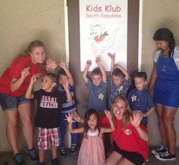

After School
School Age children enjoy both Kids Klub’s After School program and Camp programs which fill in when school is out for Summer, Winter, and Spring Break. Transportation from your child’s school to Kids Klub is available with our After School program.
The After School program includes a scheduled homework time when your child can study in peace and quiet with the assistance of our teachers. Activities such as arts & crafts, cooking, computers, and dramatic play are also part of the program. Further, outdoor time and freeplay gives your child a chance to unwind from a busy day.
Our Camp programs are packed with fun and excitement! The children venture out on two to three field trips per week. Outings that are both fun and educational such as museums, aquariums, hiking trips, the Zoo, factory tours, and nature walks are included. Other favorite trips include Raging Waters, Disneyland, Universal Studios, and the Circus. In addition to the field trips, our Camp programs offer monthly and weekly themes designed to integrate what is being taught in our science projects, art projects, and other activities with the field trips. Recreational activities such as ping-pong, darts, air hockey, and various sports and games are also a hit. Camp programs are all-inclusive providing breakfast, lunch, snacks, and most field trips at no additional cost. The staffing ratio for school age programs averages 10 to 1.